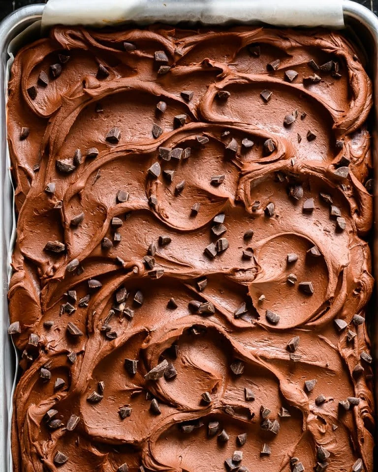

Vegan Chocolate Chip Sheet Cake

This was such a treat for me to make I love baking and being able to eat something vegan and chocolate is amazing.
Ingredients for the cake
3 tsp psyllium husks (or 3 tbsp flax seeds), (if using pre-ground or powdered, half the amount used)
12 tsp water
250 ml plant milk, (soy works best, unsweetened and unflavoured)
1/2 tbsp lemon juice, (or apple cider vinegar)
2 tsp vanilla bean paste, (or good vanilla extract)
250 ml vegetable oil, (or sunflower oil)
320 g caster sugar, (aka superfine sugar)
350 g plain white flour, (aka all purpose flour)
1½ tsp baking powder
1 tsp bicarbonate of soda, (aka baking soda)
1/2 tsp fine sea salt
160 g dark chocolate chips, (must be over 70% cacao and obvs check that it's a vegan variety)
Ingredients for the ganache
400 g coconut milk, (the kind in a can used for cooking - not the stuff for drinking in a carton. Make sure it's full fat. In the UK 400g is one can)
25 g icing sugar, (aka confectioner's sugar - alternatively use 3 tbsp agave nectar)
380 g dark chocolate, (must be over 70% cacao and obvs check that it's a vegan variety)
2 tbsp dark chocolate chips, (for decorating)
Instructions to make the cake
Preheat the oven to 180c (fan). Grease and line a 32 x 24 cm sheet tin with baking parchment. Set aside.
Measure the psyllium husks or flax seeds into a spice grinder, high speed blender or mortar and pestle. Grind/blend until the husks/seeds are roughly ground. Transfer the ground seeds to a small bowl and add the water. Whisk well and leave to hydrate.
In a medium bowl, combine the plant milk, lemon juice, vanilla, vegetable oil and caster sugar. Whisk lightly to combine. Add the hydrated, ground psyllium or flax. Either transfer to the cup of a high-speed blender or use an immersion blender to completely blend the mixture. The blended mixture should be around the same texture as mayonnaise - thick, creamy, smooth and pale. Set aside.
In a medium bowl, sieve together the flour, baking powder, bicarbonate of soda and salt. Whisk together then add to the blended wet ingredients. Fold in until just combined, making sure no lumps of flour remain. Finally add the chocolate chips, reserving a small handful for on the top of the cake.
Transfer the batter to the prepared sheet tin and level the top with a spatula. Top with the reserved chocolate chips before placing in the oven. Bake for 40 minutes, rotating the sheet tin half-way through.
Once baked, a toothpick to the centre of the cake (avoiding chocolate chips) should come out clean and the top should be golden brown. Place on a wire cooling rack to cool fully (around an hour) and do not remove the cake from the tin. Once cooled fully make the ganache.
Instructions to make the ganache
Pour the coconut milk into a small saucepan and add the icing sugar. Place over a low heat. Heat the coconut milk until it's just about to boil (you should see small bubbles appearing at the side of the pan) but do not allow it to boil fully. Stir the coconut milk with a spatula as it heats.
Once hot, remove from the heat and add the chocolate. Cover with a lid and leave to rest for 15 minutes.
Once 15 minutes is up, remove the lid and whisk well until smooth.
For a smooth, even layer of ganache, allow the mixture to cool slightly for another 10 minutes before pouring over the cooled sheet cake. The ganache should be smooth and thin enough to level itself into a flat layer.
Alternatively for a decorative, swooshy look (as pictured above) carefully sit the saucepan of chocolate ganache in a sink or large bowl of ice water and whisk constantly for a minute or so. The ganache should cool and thicken rapidly. Once thick enough to frost the cake, spoon onto the cooled cake and spread out in your desired pattern. If you overcool the ganache, just sit the saucepan in a bowl of warm water and whisk constantly until it loosens.
Once the ganache is applied, sprinkle with the chocolate chips and allow to cool to room temperature before slicing and serving.